Stop
Come to a complete stop, yield, then proceed when safe.
Free printable DMV study sheet
Use this no-email, no-signup reference to review 31 common U.S. road signs by picture, meaning, shape, and color. Print it, mark the signs that feel slow, then practice only those groups.
Last updated:
Use the online worksheetChoose the pair you mix up. Explain how the signs change the driver's decision, then try two short situations before returning to your study material.
TestDayTools printable reference
31 common signs. Read the picture first, then say the driver action before checking the meaning.
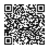
Practice only the signs you missed. Scan to find the same groups online, or go to testdaytools.com/dmv-road-signs-cheat-sheet.html.
Stop, yield, or a restriction.
General warning. Read the symbol.
Temporary traffic control, such as work zones.
School warnings and some pedestrian or bicycle warnings.
Often a regulation, such as speed or direction.
Services such as fuel or a hospital.
Use color as a clue, then check the shape, symbol, or words. Yellow-green alone does not set a school speed limit.
These signs state laws, restrictions, right-of-way rules, or required directions.
Practice 16 questionsPractice 16 questions onlineCome to a complete stop, yield, then proceed when safe.

Slow and give the right of way when another road user has priority.

Do not enter that roadway, ramp, or restricted direction.

You are facing traffic; correct your direction safely.

Traffic moves only in the arrow direction.

A U-turn is not allowed at that location.

Stop completely. ALL WAY means every approach stops; follow right-of-way rules.
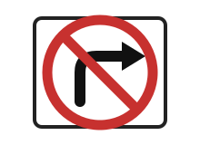
A right turn is not allowed from this approach.
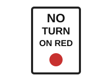
Stopping first is not enough; wait until the signal allows the turn.

Stay to the right of an island, divider, or obstruction.

The posted number is the legal maximum under normal conditions.

Passing another vehicle is prohibited in this zone.
These signs warn about conditions that may require lower speed, more space, or extra scanning.
Practice 19 questionsPractice 19 questions online
Traffic may join your lane; adjust speed and space.

A lane will end and traffic must merge.
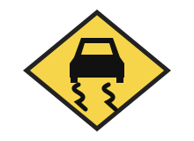
Road traction may be reduced; avoid sudden maneuvers.
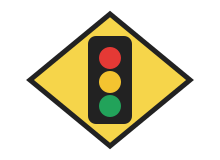
Prepare for a traffic light ahead.

Prepare for tracks and obey crossing controls.
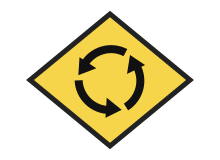
Slow and yield before entering a roundabout. Follow the arrows counterclockwise.
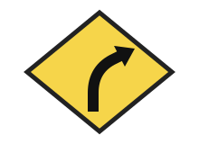
The road bends ahead; reduce speed before entering the curve.
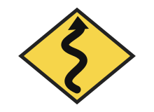
Several curves are ahead; slow down and keep steady lane position.
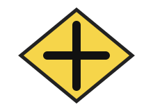
Another road crosses ahead; scan both sides for entering traffic.
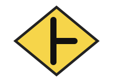
A side road joins ahead; watch for traffic entering from that side.
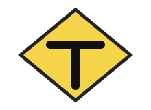
The road ends at another road; prepare to turn left or right.
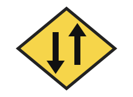
The left arrow points down and the right arrow up. Keep right and expect oncoming traffic.
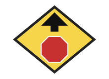
The arrow above a red octagon warns of a separate stop sign ahead. Slow now; stop at the actual control.
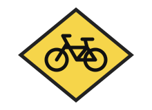
Watch for bicycles entering or crossing. Yellow-green can carry the same warning.
These signs flag special areas where driver attention, lower speed, or route information matters.
Practice 7 questionsPractice 7 questions online
Watch for children and obey school-zone rules.

Watch for people crossing and be ready to yield.

The shovel warns of workers in or near the road. Slow down and watch for temporary directions.
A hospital or medical service is nearby.
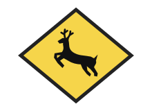
Animals may enter the road; slow and scan shoulders.
Your next review
Signs to review
Official manual section
Next quiz score____ / 40Review date____________
Say stop, yield, merge, slow, watch, or prohibited movement before reading the definition.
A short weak-sign list is more useful than repeatedly studying signs you already recognize.
Use a group link to revisit weak signs. Use the full round for a score out of 40.
Start the full 40-question roundThis page is designed to be shared as a live, free study link. Students can open it without an account, print their own copy, and move from the reference sheet into picture practice.
Use the page URL on a class, counseling, driver-education, or library resource list so learners receive the current sheet, source note, and practice links together.
Have learners cover the meanings, name each sign and driver action, circle slow answers, then open the matching picture quiz instead of rereading every card.
The illustrations support recognition of common U.S. signs. Learners should confirm state-specific laws, wording, and permit-test requirements in their official driver handbook.
Ready-to-use classroom activity
Use the three-page Letter PDF for an independent review, teen program, homeschool lesson, or driver-education warm-up. Students identify eight original sign illustrations, answer eight driver-action questions, and record the next weak area. Page three includes the answer key and a 10-minute teaching plan.
The same student activity as the classroom PDF. This is practice, not a permit-test score.
For each picture, name the sign and say what you would do before checking the answer.
Yield. Slow and give right of way when another road user has priority.
Do Not Enter. Do not enter the roadway, ramp, or restricted direction.
Speed Limit. Do not exceed the posted legal maximum under normal conditions.
Merge. Expect joining traffic. Watch for conflicts and leave space; your lane might continue.
School Crossing. Slow, scan for children, and obey posted school-zone controls.
Railroad Crossing Ahead. Prepare for tracks and obey lights, gates, or a crossbuck.
Slippery When Wet. Reduce speed and avoid sudden steering or braking.
Pick an action in each situation, then compare your reasoning with the answer.
At STOP, you can see an empty intersection beyond the stop line. What comes first?
B. Stop before the line, then yield and proceed when safe. A clear view changes the gap decision, not where or whether to stop.
At YIELD, a pedestrian has started crossing your path. What should you do?
A. Give way and stop if needed before proceeding. Giving way may require a stop. Counting seconds does not clear a conflict.
A LANE ENDS warning and the markings show your lane will end. How should you prepare?
C. Follow the markings and move into a safe gap. Lane reduction means your lane ends, but the warning does not give you priority.
A yellow-green diamond shows a person walking. People are near the crosswalk. What now?
A. Slow, scan for crossing people, and be ready to yield. The symbol warns of pedestrians; the color alone does not set a speed limit.
It is raining and you see SLIPPERY WHEN WET before a curve. What is the better response?
B. Reduce speed before the curve and steer and brake smoothly. Slow before the curve. Sudden braking or steering on wet pavement can reduce control.
You see a round railroad warning sign, but the tracks are not yet in view. What now?
A. Look and listen for trains; prepare to stop and obey the crossing controls. The circle is an advance warning. Check before you reach the tracks.
After an orange work-zone warning, a flagger faces you with a STOP paddle. What now?
C. Stop as directed and wait for the flagger to signal you through. The orange sign warns; the flagger's paddle controls whether you may proceed.
A red slash crosses a right-turn arrow. The light is green. May you turn right?
B. No. Follow a permitted movement and choose another route. NO RIGHT TURN is not NO TURN ON RED. Green does not cancel the posted prohibition.
Now your lane continues, but a ramp joins from the right. What should you watch for, and why does a MERGE warning not require you to leave your lane?
Watch for joining traffic and leave space. The warning does not say that your lane ends; use the actual lane markings and traffic conditions before changing lanes.
Try the 10-question picture quiz
Study references: PennDOT driver manual: signs and FHWA flagger procedures (section 6D.05). See your state handbook for local rules.
Teachers, libraries, driving schools, families, and other noncommercial educators may print and share the unmodified PDF for noncommercial educational use when the TestDayTools credit and this page URL remain visible. Do not sell, rebrand, adapt, or include the resource in a paid product, and do not imply endorsement by a DMV or government agency.
This permission applies only to sharing the unmodified cheat-sheet PDF and classroom worksheet PDF. TestDayTools branding, site code, separate reuse of quiz questions, and separate reuse of the original illustrations are not included. All other rights are reserved.
Checked the consistency of the 31 shared illustrations and labels, the eight classroom illustrations and answer-key mapping, and the three linked contrast lessons. Simplified pictures teach recognition, not sign manufacturing specifications or every state's traffic law.
The classroom school sign now uses the shared five-sided artwork. Do Not Enter lettering stays on its red background; the Keep Right arrow no longer crosses its lettering. Lane Ends retains two lane-boundary strokes without a merge arrow, and Slippery When Wet retains a vehicle and two skid tracks. The classroom pack and web reference now use the same exported sign pictures.
TestDayTools: AI-assisted drafting, illustration maintenance and comparison with the official sources below. This is not a driving-instructor assessment or a study of learning outcomes.
2026-11-21: Corrected Stop Ahead to show an upward arrow over a plain red octagon, and Two-Way Traffic to show the left arrow down and the right arrow up. The circular-intersection drawing now uses three counterclockwise arrows. The bicycle silhouette fits inside its diamond; a fluorescent yellow-green version can carry the same warning. FHWA MUTCD Figure 2C-8, W3-1 and Figure 2C-11, W6-3 and Figure 2C-10, W2-6 and Figure 2C-14, W11-1.